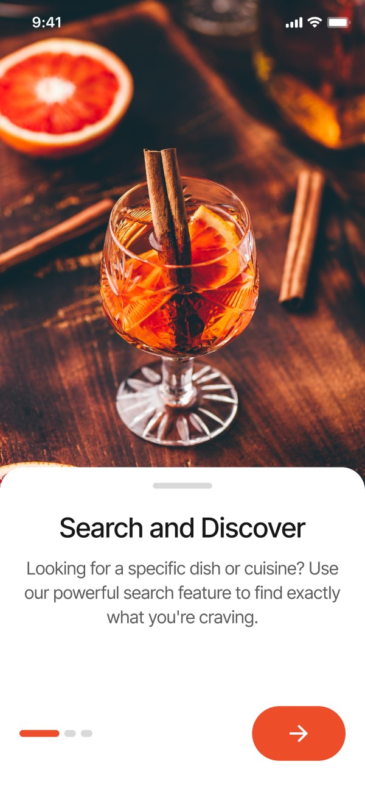
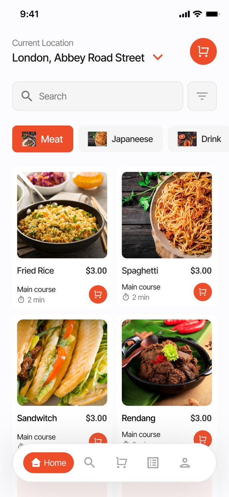
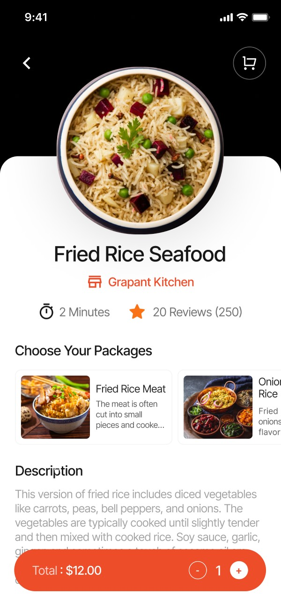
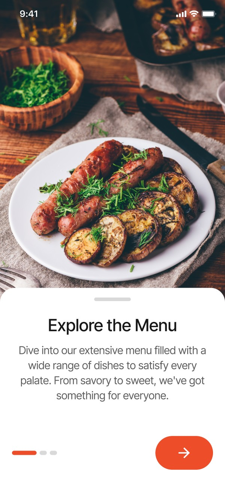
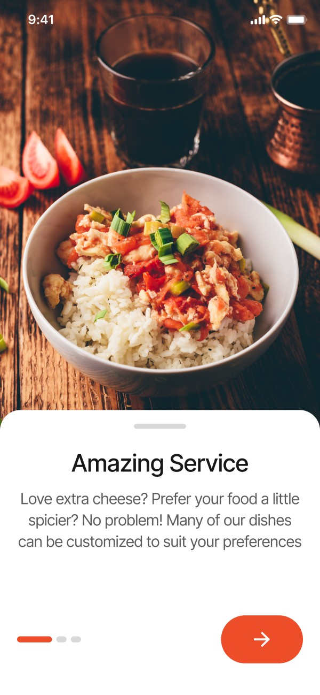
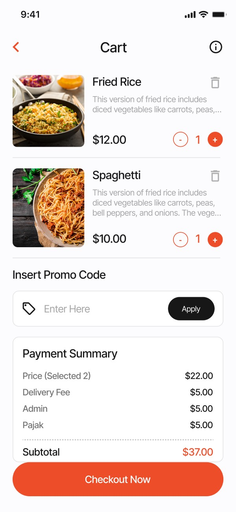
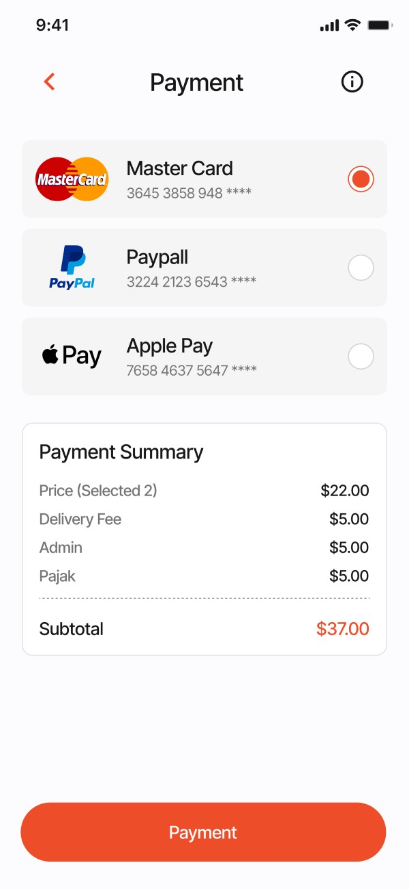
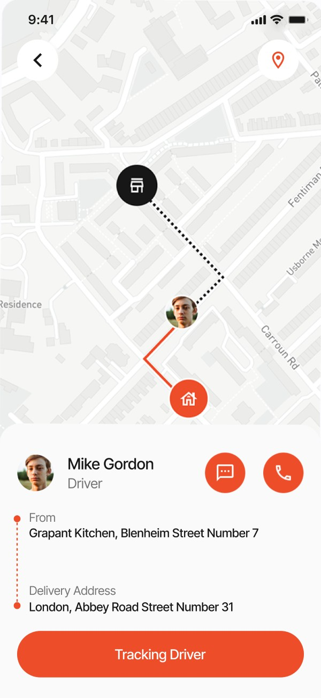
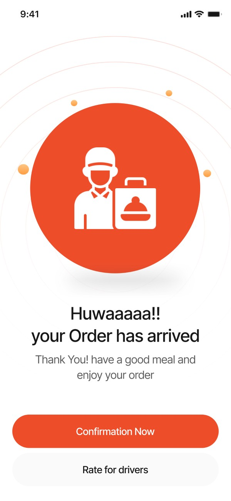

★★★★★
“Good experience overall. My 3rd project with them overall. Will highly recommend using them.”

Tom WymanWeb Designer
Built with Flutter & PHP | Ready to Deploy | Scalable & Secure | iOS & Android
We offering custom solutions with online ordering, real-time tracking, secure payments, and seamless experiences.
Get a Free Quote


Quick Foodie is a powerful multi-vendor food delivery platform that allows restaurant brands to be managed from a single admin system, built end-to-end with Flutter and a secure PHP backend.
Built With Modern Tech
Quick Foodie is a powerful multi-vendor food delivery platform that allows restaurant brands to be managed from a single admin system.
Showcase dishes with high-quality images, real-time availability, and detailed customization options.
Let customers find your restaurant through keyword, voice, or mood-based search filters.
Support for ingredient selection, spice levels, dietary preferences (Vegan, Jain, Keto), and portion upgrades.
Real-time pricing, discount codes, and add-ons handled intelligently in the backend.
Integrated with major payment gateways for quick and secure checkouts.
Real-time delivery tracking with GPS, ETA updates, and delivery person contact info.
Built-in rating and review system to improve service quality and build brand loyalty.
The Digital Menu Browsing Experience in Quick Foodie is designed to be highly interactive, data-driven, and performance-optimized using Flutter, Firebase, and scalable backend services. Below is a breakdown of the technical aspects that power the seamless customer experience:

The Smart Search Capabilities in Quick Foodie are designed to deliver highly contextual, fast, and intuitive discovery of dishes, restaurants, and cuisines. The search engine utilizes real-time indexing, cloud functions, and local state management to ensure a lightning-fast and relevant user experience.
The Customization Features enable users to personalize their meals to match their taste, dietary needs, and lifestyle. It enhances user satisfaction and order accuracy through an intuitive, modular customization interface tightly integrated with backend logic and cart calculations.


The core UI/UX components that make up the user’s primary interaction with the food delivery system. Designed with Flutter, integrated with Firebase, and built with clean architecture, each feature plays a vital role in user engagement and operational flow.

The Cart Summary is designed for maximum clarity and control, giving users a streamlined, stress-free ordering experience right before checkout.
The Payment Options in Quick Foodie is engineered for speed, security, and simplicity, making checkout effortless across devices and user types.


The Live Map Tracking feature is designed to bring real-time visibility, user confidence, and communication efficiency during the order delivery process. The integrated map view (powered by Google Maps SDK for Flutter) offers users a live GPS feed of the Delivery Person location, updated in real-time.
The Order Completion Module is designed to finalize the transaction loop while gathering valuable user feedback and confirming delivery success.

We have clients from all over the world, including US, UK, Australia, Middle East, Canada and India.
We have developed numerous complete web & mobile app for our clients across the globe.
We as an organization believe that client satisfaction begins from requirements definition phase to design, feedback cycle and golive.
We operate on all the top technology stacks such as .NET Core, MERN, MEAN, React Native, Swift, Java and many more.


“Good experience overall. My 3rd project with them overall. Will highly recommend using them.”
Tom WymanWeb Designer
“Its been a pleasure to work with CloudConverge.io team. They have a great team, including their Customer Success Manager who was great help to us. We have been doing great during our peak sale season, without any hickup. Great job guys.”

Richard HellerCEO
“We are really happy with how quickly we were able to launch the project, they had a really seamless process of getting our existing database and agents onboard, manage their leads & properties. We will definitely recommend using them for any web solution project. They have a great team in place with a talent to understand business intricacies.”

Samuel CorrensLong Island RE
“We were looking to modern a lot of aspects within our organization including migration to Business Central as ERP, implementing Microsoft 365, Cloud Services and Web Development. We at Kabu Projects and Atmos are happy to refer Cloud Converge team and all IT services. They are well-versed with the best practices, have a good project management and software team.”
Kabu Projects
“We are a non-profit were organizing a large event which includes delegates and attendees from all over the globe. The way Cloud Converge team handled our web presence, online payment system was truly exceptional. The entire process including site design, implementation of CRM, integration with partners, live dashboards were all delivered in record time. Most of all, because of the high footfall on the event, we had thousands of registration on launch itself, the way the entire system worked effortlessly was a great experience for all stakeholders.”

Entrepreneur’s Organization Gurgaon
“We are very happy with the project delivered by the CC team. The entire development process has worked seamlessly for us, with regular updates, thorough testing of deliverables, great ideas throughout the development process.”

Barry SarnoffCEO